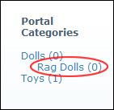
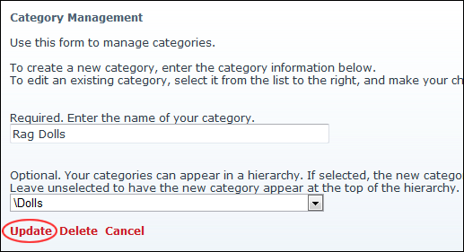

Editing Blog Categories
How to edit blog categories using the Blog_Categories module which forms part of the Blog module suite.
- Select Edit Categories from the Blog_Categories module actions menu.
- In the Portal Categories list (displayed on the right of this page) click on the category to be edited.

- In the Required. Enter the name of your category text box, edit the category name.
- At the drop down list, select a new parent for this category - OR - select None to make this a parent category.
-
Click the Update button.

Editing Blog Categories